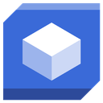

<!-- body of the BIM VR Suite mockup; merged with the real site header by the build step -->

<!-- ===== hero: same box as the live site heroes (min-height 465, padding 80/80) ===== -->
<section class="bs bs-hero" dir="rtl" aria-label="oYmer BIM VR Suite">
  <div class="bs-herobg" aria-hidden="true">
    <span class="p p1"></span><span class="p p3"></span><span class="p p2"></span><span class="p p4"></span>
  </div>
  <div class="inner">
    <h1 class="bs-title" dir="ltr">
      <span class="w oyw" style="--i:0">o<span class="yflash">Y</span>mer</span>
      <span class="w" style="--i:1">BIM</span>
      <span class="w" style="--i:2">VR</span>
      <span class="w sm" style="--i:3">Suite<sup class="oyc">&#169;</sup></span>
    </h1>
    <p class="sub rev">כלי עבודה ל BIM מבוססי <span class="ai"><i>AI</i></span> בסביבת <span class="ai vr"><i>VR</i></span></p>
  </div>
</section>

<main class="suite bs" dir="rtl">

  <section class="products" id="products">
    <div class="bimbg" aria-hidden="true"><span class="plan"></span><span class="iso"></span><span class="dots d1"></span><span class="dots d2"></span>
      <svg class="draw" viewBox="0 0 1600 900" preserveAspectRatio="xMidYMid slice" aria-hidden="true">
      <g class="dg" style="animation-delay:0s">
        <path pathLength="1" d="M90 150h330v210H90Z"/>
        <path pathLength="1" d="M250 150v210"/>
        <path pathLength="1" d="M250 300a60 60 0 0 0 60-60"/>
        <path pathLength="1" d="M90 400h330"/>
        <path pathLength="1" d="M90 390v20M420 390v20M250 392v16"/>
      </g>
      <g class="dg" style="animation-delay:2.3s">
        <path pathLength="1" d="M1180 210 1330 296 1330 468 1180 554 1030 468 1030 296Z"/>
        <path pathLength="1" d="M1180 210v172M1180 382 1330 468M1180 382 1030 468"/>
      </g>
      <g class="dg" style="animation-delay:4.6s">
        <path pathLength="1" d="M690 620h150v150H690Z"/>
        <path pathLength="1" d="M690 645h150M690 670h150M690 695h150M690 720h150M690 745h150"/>
        <path pathLength="1" d="M865 620v150"/>
      </g>
      <g class="dg" style="animation-delay:6.9s">
        <circle pathLength="1" cx="1240" cy="700" r="46"/>
        <path pathLength="1" d="M1240 654v92M1194 700h92"/>
        <path pathLength="1" d="M1286 668 1400 596"/>
      </g>
      <g class="dg" style="animation-delay:9.2s">
        <path pathLength="1" d="M520 90h560"/>
        <path pathLength="1" d="M520 78v24M800 78v24M1080 78v24"/>
        <path pathLength="1" d="M300 470h180v300H300Z"/>
      </g>
    </svg>
    </div>
    <div class="inner">
      <div class="wins">

        <div class="winwrap c1 rev">
          <span class="glow" aria-hidden="true"></span>
          <a class="win" href="suite-decisionmaker.html">
            <span class="wtop"><span class="rname ltr"><span class="oy">oYmer</span> DecisionMaker<sup class="oyc">&#169;</sup></span></span>
            <span class="bezel">
              <span class="screen">
                <video src="media/viewer/dm-window.mp4?v=1" poster="media/viewer/dm-window.jpg?v=1" muted loop playsinline autoplay preload="metadata" aria-label="פגישת אישור על משקפי Quest"></video>
                
                <span class="center">
                  <span class="oneline">
                    <b>פגישת</b> <b>אישור</b> <b>בקנה</b> <b>מידה</b> <b>1:1</b>
                  </span>
                  <span class="uline"></span>
                </span>
              </span>
            </span>
            <span class="wbody">
              <span class="ribbon"><span class="press">לחצו לעמוד המלא <i class="arw ltr">←</i></span></span>
            </span>
          </a>
        </div>

        <div class="winwrap c2 rev">
          <span class="glow" aria-hidden="true"></span>
          <a class="win" href="suite-viewer.html">
            <span class="wtop"><span class="rname ltr"><span class="oy">oYmer</span> Viewer<sup class="oyc">&#169;</sup></span></span>
            <span class="bezel">
              <span class="screen">
                <video src="media/viewer/viewer-main.mp4?v=1" poster="media/viewer/viewer-main.jpg?v=1" muted loop playsinline autoplay preload="metadata" aria-label="המודל נפתח בדפדפן"></video>
                
                <span class="center">
                  <span class="oneline">
                    <b>מודל</b> <b>ה BIM</b> <b>בתוך</b> <b>ה VR</b>
                  </span>
                  <span class="uline"></span>
                </span>
              </span>
            </span>
            <span class="wbody">
              <span class="ribbon"><span class="press">לחצו לעמוד המלא <i class="arw ltr">←</i></span></span>
            </span>
          </a>
        </div>

        <div class="winwrap c3 rev">
          <span class="glow" aria-hidden="true"></span>
          <a class="win" href="suite-familycreator.html">
            <span class="wtop"><span class="rname ltr"><span class="oy">oYmer</span> Family Creator<sup class="oyc">&#169;</sup></span></span>
            <span class="bezel">
              <span class="screen">
                <video src="media/lab/kitchen-lab.mp4" poster="media/lab/kitchen-lab-poster.jpg" muted loop playsinline autoplay preload="metadata" aria-label="פרמטרים מזיזים גיאומטריה"></video>
                
                <span class="center">
                  <span class="oneline">
                    <b>יצירת</b> <b>משפחות</b> <b>דינמיות</b> <b>לרוויט</b>
                  </span>
                  <span class="uline"></span>
                </span>
              </span>
            </span>
            <span class="wbody">
              <span class="ribbon"><span class="press">לחצו לעמוד המלא <i class="arw ltr">←</i></span></span>
            </span>
          </a>
        </div>

        <div class="winwrap c4 rev">
          <span class="glow" aria-hidden="true"></span>
          <a class="win" href="suite-typestudio.html">
            <span class="wtop"><span class="rname ltr"><span class="oy">oYmer</span> Type Studio<sup class="oyc">&#169;</sup></span></span>
            <span class="bezel">
              <span class="screen">
                <video src="media/lab/kitchen-revit.mp4" poster="media/lab/kitchen-revit-poster.jpg" muted loop playsinline autoplay preload="metadata" aria-label="טיפוס משפחה נבנה בתוך Revit"></video>
                
                <span class="center">
                  <span class="oneline">
                    <b>יצירת</b> <b>טיפוסים</b> <b>חדשים</b> <b>בתוך</b> <b>רוויט</b>
                  </span>
                  <span class="uline"></span>
                </span>
              </span>
            </span>
            <span class="wbody">
              <span class="ribbon"><span class="press">לחצו לעמוד המלא <i class="arw ltr">←</i></span></span>
            </span>
          </a>
        </div>

      </div>
    </div>
  </section>

</main>

<script>
  /* entrance: cards rise in, and the one-liner assembles word by word once its card is in */
  (function () {
    var els = document.querySelectorAll(".rev");
    function showAll() { Array.prototype.forEach.call(els, function (e) { e.classList.add("in"); }); }
    if (!("IntersectionObserver" in window)) { showAll(); return; }
    var io = new IntersectionObserver(function (ents) {
      ents.forEach(function (en) {
        if (!en.isIntersecting) return;
        var d = parseInt(en.target.dataset.i || "0", 10) * 90;
        setTimeout(function () { en.target.classList.add("in"); }, d);
        io.unobserve(en.target);
      });
    }, { threshold: 0.1, rootMargin: "0px 0px -30px 0px" });
    var wi = 0, oi = 0;
    Array.prototype.forEach.call(els, function (e) {
      /* cards stagger among THEMSELVES. indexing across every .rev put the hero sub-line
         at 0 and pushed Family Creator to 270ms while Type Studio wrapped back to 0. */
      e.dataset.i = e.classList.contains("winwrap") ? (wi++ % 4) : (oi++ % 4);
      io.observe(e);
    });
    setTimeout(showAll, 3000);
  })();

  /* pointer-tracked 3D tilt. the frame leans toward the cursor, the glow behind leans away,
     so the panel reads as a solid object floating above its own light. */
  (function () {
    if (window.matchMedia("(prefers-reduced-motion: reduce)").matches) return;
    if (!window.matchMedia("(hover: hover)").matches) return;
    var MAXX = 8, MAXY = 10;
    Array.prototype.forEach.call(document.querySelectorAll(".winwrap"), function (wrap) {
      var win = wrap.querySelector(".win"), glow = wrap.querySelector(".glow"), raf = 0;
      function move(ev) {
        if (raf) return;
        raf = requestAnimationFrame(function () {
          raf = 0;
          var r = wrap.getBoundingClientRect();
          var px = (ev.clientX - r.left) / r.width - 0.5;
          var py = (ev.clientY - r.top) / r.height - 0.5;
          win.style.transform =
            "translateY(-8px) rotateX(" + (-py * MAXX).toFixed(2) + "deg) rotateY(" +
            (px * MAXY).toFixed(2) + "deg) translateZ(18px)";
          if (glow) glow.style.transform = "translate(" + (px * -28).toFixed(1) + "px," +
            (py * -22 + 12).toFixed(1) + "px) scale(1.08)";
        });
      }
      wrap.addEventListener("mousemove", move);
      wrap.addEventListener("mouseleave", function () {
        win.style.transform = "";
        if (glow) glow.style.transform = "";
      });
    });
  })();
</script>

<script type="speculationrules">
{"prerender":[{"urls":["suite-decisionmaker.html?from=suite","suite-viewer.html?from=suite","suite-familycreator.html?from=suite","suite-typestudio.html?from=suite"],"eagerness":"moderate"}]}
</script>
<script src="suite-morph.js?v=17"></script>
